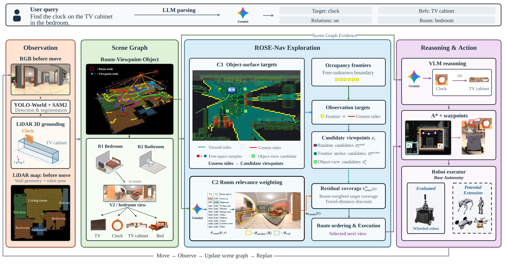
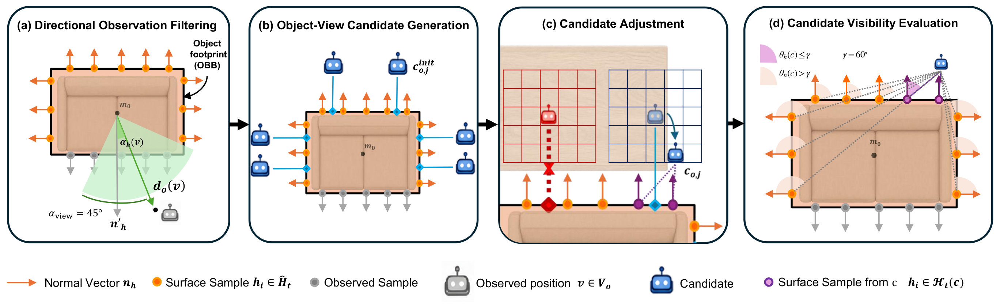

ROSE-NavRoom-Aware Object-Centric Semantic Exploration for Language-Guided Navigation
1 Department of Smart Mobility Engineering 2 Department of Electrical and Electronic Engineering
Inha University, Republic of Korea
Earlier draft (PDF)View resultsExploration trajectories
Select a map to enlarge


All four policies start from the same pose with the same seed. The instruction asks the robot to visit the blue chair beside the bed in the bedroom, then the towel in the bathroom. In this episode, ROSE-Nav visits the bedroom containing the blue chair, then reaches the towel in the bathroom. Red marks the start of each route, blue indicates later travel, and purple marks the endpoint.
Abstract
A robot asked to find the bedside table closest to a window needs to see both objects and establish their spatial relationship. A viewpoint that reveals a large unexplored area can still leave one of them occluded.
ROSE-Nav combines exploration of unknown space with additional views of objects mentioned in the instruction. A room–viewpoint–object scene graph stores visual evidence, and each object’s observation history identifies sides that warrant another look. The planner uses room relevance to weight visible frontiers and object footprints, samples complementary viewpoints, and orders them into a route.
Method
From a language query to the next viewpoint
For “Find the clock on the TV cabinet in the bedroom,” the system identifies the clock as the target, the cabinet as a reference, and the bedroom as room context. Panoramic images and 3D LiDAR observations update the scene graph as the robot moves. The evaluation uses a simulated wheeled robot.

Figure 1. New observations update the scene graph after each move. The evaluation uses the wheeled robot shown in the figure. The dashed box indicates possible extensions to other platforms.
Choosing where to look again
Suppose the robot first sees a cabinet from the doorway. Its map records the cabinet’s estimated outline on the floor and the direction of that first view. Figure 2 shows how ROSE-Nav uses this history to choose another angle. A target is a point on the outline to inspect. A candidate is a place the robot could stand to inspect it.

- (a) Which sides still need a look?
- Each edge has an outward direction perpendicular to it. If that direction is within 45° of a recorded direction from the object toward the robot, the planner treats the edge as previously viewed. The remaining edges are eligible for another look.
- (b) Where could the robot stand?
- Along each remaining edge, the planner places seeds every 0.8 m. From each seed it steps 1.5 m straight outward to propose a robot position. The more closely spaced dots along the edge (about 0.3 m apart) are the targets the robot could inspect.
- (c) Can the robot get there?
- If a proposed position falls on a blocked cell, the planner tries the nearest traversable cell in a 5 × 5 neighborhood. It discards proposals with no suitable cell, removes duplicates, and checks that the robot can reach the position.
- (d) What could it see from there?
- From the adjusted position, an edge sample counts if it is 0.5–3 m away, the map shows a clear line of sight, and the line from the sample to the robot is within 60° of the edge’s outward direction. The planner combines these visible samples with visible frontiers when scoring the position.
Ablation results
- Counting accuracy
- 86.2%
- Object-finding success
- 92.5%
- Instruction-following success
- 84.4%
Each policy ran all 30 queries in Unity with five shared random seeds. The 13 counting queries, 8 object-finding queries, and 9 instruction-following queries yielded 65, 40, and 45 episodes per policy, respectively. Table 1 reports averages across seeds.
Q1 requires an exact count. Q2 compares the reported object position with the ground-truth target location. Q3 evaluates subgoal order, path constraints, and the final stopping condition.
| Policy | Q1 · Numerical | Q2 · Object finding | Q3 · Instruction following | ||||||
|---|---|---|---|---|---|---|---|---|---|
| Acc. ↑ | MAEᵥ ↓ | Time ↓ | SR ↑ | SPT ↑ | AT ↓ | SR ↑ | SPT ↑ | AT ↓ | |
| Frontier baseline | 70.8 | 0.43 | 366.9 | 72.5 | 41.8 | 256.6 | 75.6 | 24.8 | 390.1 |
| + Room weighting | 78.5 | 0.57 | 271.3 | 80.0 | 40.1 | 299.1 | 66.7 | 46.2 | 174.3 |
| + Object coverage | 70.8 | 0.51 | 360.3 | 72.5 | 31.7 | 323.2 | 51.1 | 19.9 | 368.7 |
| ROSE-Nav | 86.2 | 0.37 | 332.0 | 92.5 | 46.7 | 296.0 | 84.4 | 50.1 | 239.5 |
Rates are percentages and times are seconds. Acc. is exact-match accuracy and MAEᵥ is mean absolute error among valid responses. SR is success rate, SPT is success penalized by time, and AT is average completion time among successful episodes.
ROSE-Nav reached 86.2% counting accuracy and the highest success rate on both navigation tasks. Among successful episodes, the frontier baseline was fastest on object finding (256.6 s), and room weighting alone was fastest on instruction following (174.3 s).